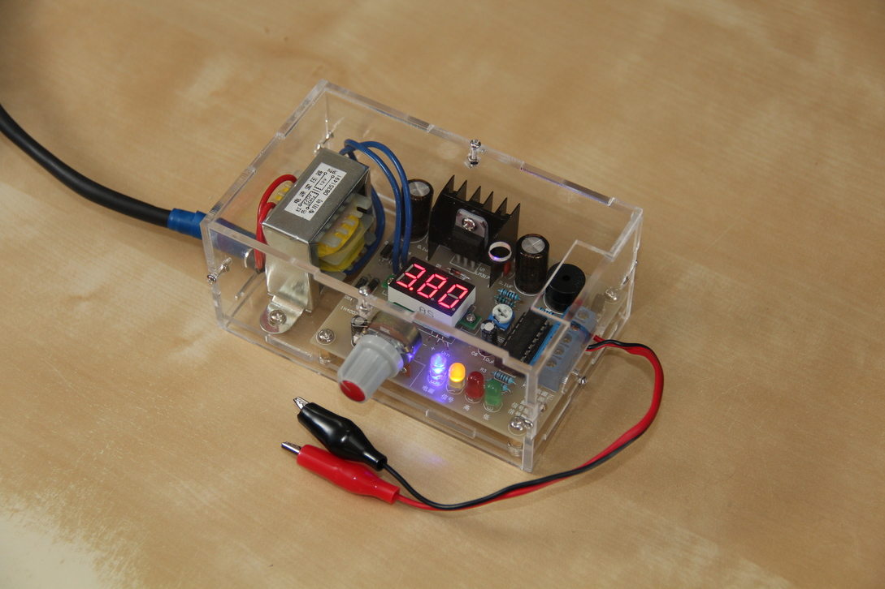
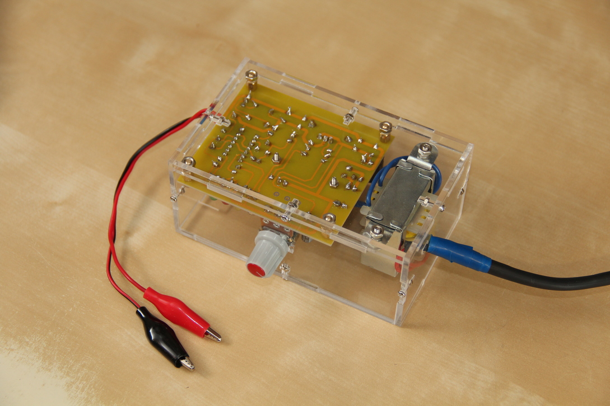
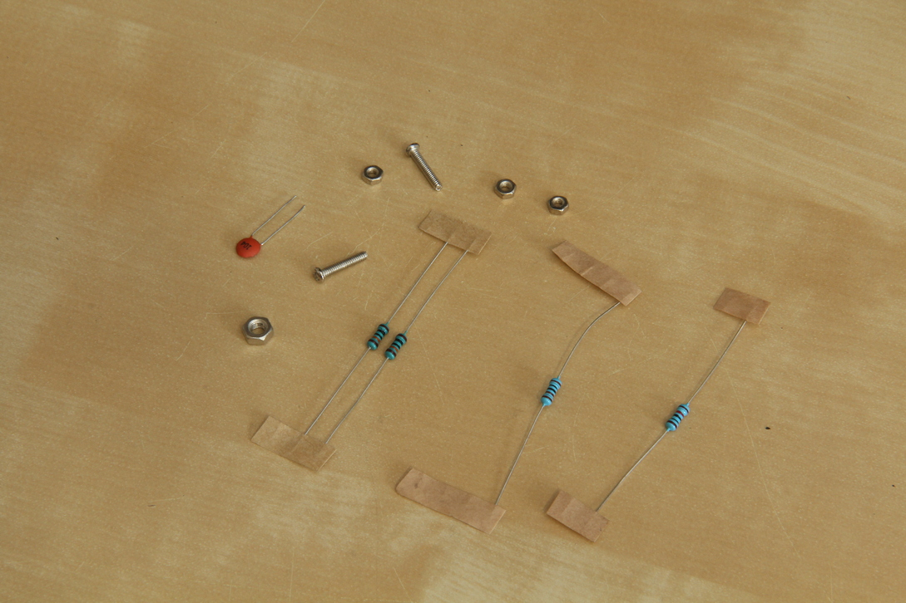

DIY power supply from AliExpress
Just finished soldering and assembling a DIY power supply purchased from AliExpress. I don’t think I’m going to use it for powering anything important (even during prototyping), because very small changes applied to the potentiometer result in a big changes to voltage. And I’m a bit wary that I can burn out something just by accidentally touching the handle. Maybe I’ll look into replacing the potentiometer with a precision multi-turn one - this should greatly improve things.
Yet I’m quite happy with it as a learning experience in soldering - it’s the biggest thing I’ve soldered so far =)
And in the end there were even some spare parts left. I liked the idea with the extra resistors - each nominal value came in different quantity, so you can distinguish them not only by color code, but simply by counting.
Then there were some nuisances with assembly - the power cord didn’t fit the hole in the case, some bolts were longer than needed, some small cracks appeared on the case. But overall I’m very satisfied - given the price and all the fun I had =)